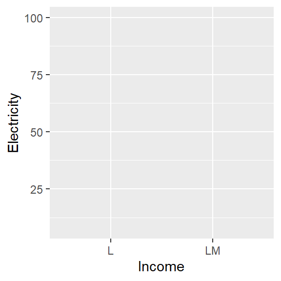
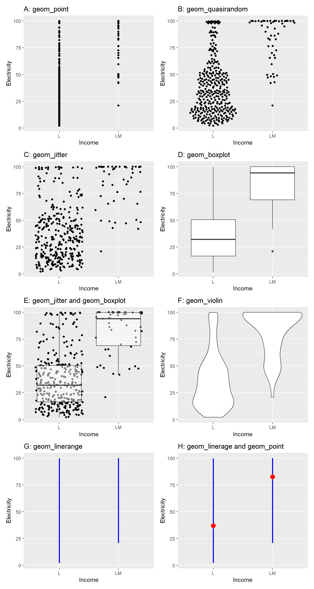
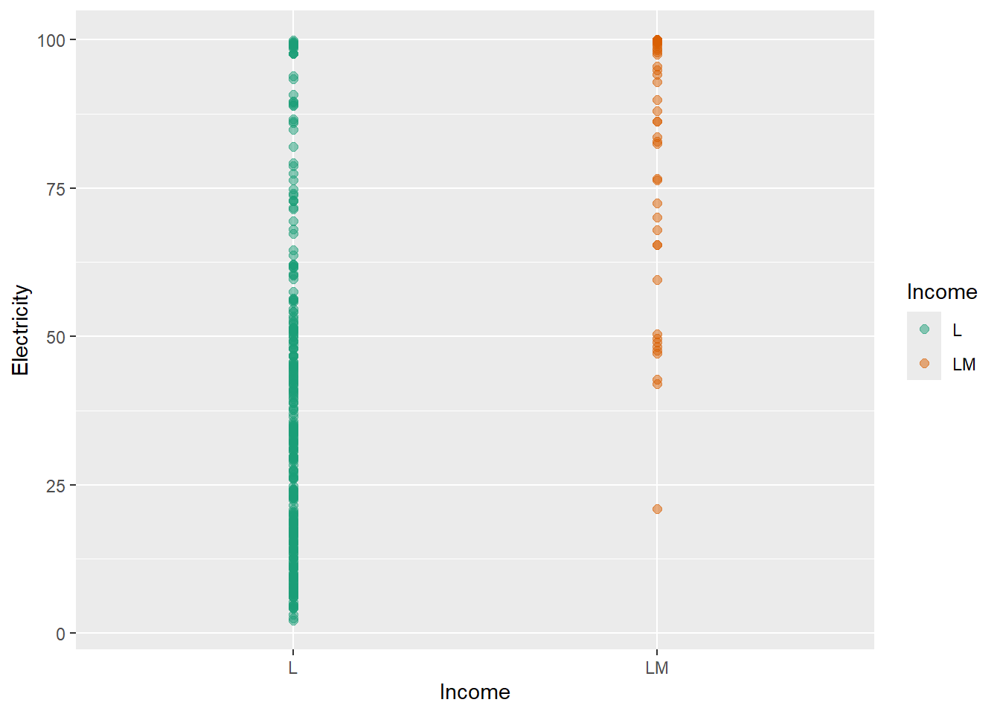
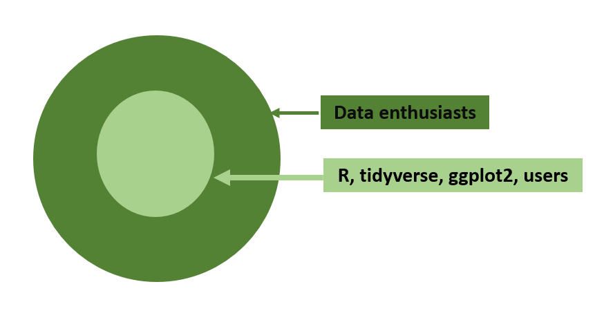

| Variable | Description |
|---|---|
| Country | Country name |
| Income | Income category in 2021: lower income (L), lower middle income (LM) |
| Electricity | Percentage of people access to electricity |
Preface
What can I find in this geom encyclopedia?
Before answering this question let me briefly explain what is data visualisation? Data visualization is the graphical representation of data to understand the patterns, trends, relationships, outliers and complex structures hidden inside data more easily.
Now let’s look at what is geom?
In data visualization, geometries (or geoms) refer to the visual elements that represent data in a plot. They define the type of chart or shape used to depict data points or relationships.
To illustrate the idea I use the following dataset which contains information related to 82 countires. The variable description is as follows:
The first eight rows of the dataset as well as the R code to load the dataset is given below:
library(drone)
library(tidyverse)
data("worldbankdata")
worldbankdata2021 <- worldbankdata |> filter(Year == 2021) |>
filter( Income == "LM" | Income =="L") |>
select( Country, Income, Electricity)
worldbankdata2021 |> head(8)# A tibble: 8 × 3
Country Income Electricity
<fct> <fct> <dbl>
1 Afghanistan L 97.7
2 Angola LM 48.2
3 Burundi L 10.2
4 Benin LM 42.0
5 Burkina Faso L 19.0
6 Bangladesh LM 99.0
7 Bolivia LM 98.6
8 Bhutan LM 100 Now, I want to visualize the relationship between Electricity and Income variables on the cartesian coordinate plane shown in Figure @ref(fig:cartesian)

Figure 2 shows 6 plotting types that I created using the same dataset and same cartesian plane.

Even though, I used the same data set and same Cartesian coordinate plane the appearance of the plots are drastically different.
Could you list the differences you observe in the charts?
The type of chart or shape used to depict data. In data visualization grammar of graphics framework, this is reffered to as gemetries (or geoms), the visual elements that represent data on a plot. In the ggplot2 package, this is reffered to as geom layer.
The statistics that we compute on the data to visualise on the chart. In the ggplot2 this is referred to as stat layer.
Here is a summary of geom and stat layers used in the charts shown in Figure @ref(fig:geom).
| Plot | geom layer | stat layer |
|---|---|---|
| A | point | data is plotted as-is |
| B | quasirandom | data is plotted as-is. But, generate quasirandom placement of points, helpful for avoiding overplotting |
| C | jitter | data is plotted as-is. But, adds a small amount of random noise to the position of points to reduce overlap and make individual points more visible |
| D | boxplot | Five statistical summary measures used in the boxplot |
| E | jitter and boxplot | Individual points and summary measures corresponds to boxplot |
| F | violin | calculate and plot the kernel density estimation (KDE) for continuous data |
| G | linerange | Range of data |
| H | linerange and point | Range and mean of data |
This encyclopedia is a collection of geoms, in other words plot types that you can create using the ggplot2 or extensions of ggplot2 framework. In other words Encyclopedia of Plots.
Motivation to write this book
The motivation behind writing this encyclopedia is, there is no centralized resource where all geoms can be viewed in one place. Additionally, no comprehensive book exists that catalogs the different types of plots available for data visualization. Having them in one place help data visualizers to craft more effective analyses and create new geoms. Further, this also helps to avoid duplicate efforts.
What you will learn?
Each geom has a set of aesthetics that it understands. These aesthetics can be divided into two parts: i) required aesthetics and ii) optional aesthetics. Further, Every geom has a default stat; and every stat has a default geom.
To get an idea about the associated aesthetics and stat let look at plot shown in Figure 4. In this case x, y are required aesthetics and color size and alpha is optional aesthetics. The statistics layer is identity since the data points are plotted as it is.
The aesthetic mappings, defined with aes(), describe how variables in the dataset are mapped to visual properties or aesthetics. This aes(x=Income, y=Electricity, color=Income) is called mapping variables to the visual properties of the chart. This alpha=0.5, size=2 is called setting values to visual properties.
ggplot(worldbankdata2021, aes(x=Income, y=Electricity, color=Income)) +
geom_point(alpha=0.5, size=2) +
scale_color_brewer(palette = "Dark2")
In this geom encyclopedia, you will learn about the required and optional aesthetics that each geom supports, as well as the associated statistical layer for each geom. Additionally, an example is provided demonstrating the application of each geom with reproducible R code.
What you won’t learn?
This book is not focused on teaching R programming fundamentals or providing a comprehensive guide to data visualization principles. It assumes you already have a basic understanding of R and ggplot2, and it will not cover how to start from scratch in these areas.
How this geom encyclopedia is organized?
As this is an encyclopedia, the chapters are organised according to the alphabetical order. However, within a chapter geoms are not organized according to the alphabetical order. At the beginning of each chapter, I have tabulated the geoms listed under that letter.
Audience
The Figure 3 shows my target audience for the book. In general for all data enthusiasts, this can be considered as a Encyclopedia of Plots. For R, tidyverse, gggplot2 users this can be considered as a Data Visualisation Geometries Encyclopedia.

What prior knowledge is needed to use this geom encyclopedia?
For a complete newcomer to get an idea about the possible charts that can be drawn for a data set.
None
To get hands-on-experience with the examples provided you need to have following knowledge.
R and RStudio Integrated Development Environment (IDE)
Basics of R programming
tidyverse (Wickham et al. 2019) style of coding
Data wrangling with tidyr(Wickham, Vaughan, and Girlich 2024) and dplyr(Wickham et al. 2023)
Knowledge in using the pipe operator: |>
Knowledge in creating data visualisations using the grammar of graphics frame work implemented in ggplot2(Wickham 2016)
If you want to learn more of them, following are the books recommended:
R for Data Science (2e) written by Hadley Wickham, Mine Çetinkaya-Rundel, and Garrett Grolemund.
ggplot2: Elegant Graphics for Data Analysis (3e) written by Hadley Wickham, Danielle Navarro, and Thomas Lin Pedersen.
Acknowledgments
I would like to thank all the package authors and contributors who have developed and shared geoms as R packages.
I would like to thank all the students who took my ASP 460 2.0/STA 492 2.0 Data Visualization course in 2024 for their valuable contributions in exploring geoms with me.
This book was built with Quarto.
Cite
Please use the below text and bibtex for citing the book.
T. S. Talagala, Data Visualisation Geometries Encyclopedia: Geoms in the Grammar of Graphics - All Types of Plots. [Online]. Available: https://thiyangt.github.io/geom.encyclopedia/. [Accessed: Jan. 18, 2025
@online{talagala2024geoms, author = {Thiyanga S. Talagala}, title = {Data Visualisation Geometries Encyclopedia: Geoms in the Grammar of Graphics - All Types of Plots}, year = {2024}, url = {https://thiyangt.github.io/geom.encyclopedia/}, note = {Accessed: 2025-01-18} }
Please use the below text and bibtex for citing the associated R package drone.
Talagala T (2025). drone: Data for Data Visualisation Geometries Encyclopedia. R package version 1.0.0, commit 86d4fc19bb3a03da3eeb8f6748cb0bfc21dfdf72, <https://github.com/thiyangt/drone>.
@Manual{drone, title = {drone: Data for Data Visualisation Geometries Encyclopedia}, author = {Thiyanga S. Talagala}, year = {2025}, note = {R package version 1.0.0, commit 86d4fc19bb3a03da3eeb8f6748cb0bfc21dfdf72}, url = {https://github.com/thiyangt/drone}, }
Colophon
The field of data visualization is dynamic, and new techniques and visualizations may emerge over time. Hence, I will be regularly updating this encyclopedia to ensure it remains a relevant and comprehensive resource for users.
Wickham, Hadley. 2016. Ggplot2: Elegant Graphics for Data Analysis. Springer-Verlag New York. https://ggplot2.tidyverse.org.
Wickham, Hadley, Mara Averick, Jennifer Bryan, Winston Chang, Lucy D’Agostino McGowan, Romain François, Garrett Grolemund, et al. 2019. “Welcome to the tidyverse.” Journal of Open Source Software 4 (43): 1686. https://doi.org/10.21105/joss.01686.
Wickham, Hadley, Romain François, Lionel Henry, Kirill Müller, and Davis Vaughan. 2023. Dplyr: A Grammar of Data Manipulation. https://CRAN.R-project.org/package=dplyr.
Wickham, Hadley, Davis Vaughan, and Maximilian Girlich. 2024. Tidyr: Tidy Messy Data. https://CRAN.R-project.org/package=tidyr.